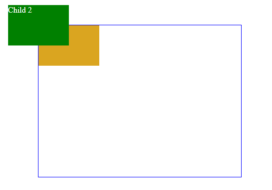

2
Did you noticed that when you moved the first child, the position of the second child stays the same? This is how `position: relative` works. Initially, the element is placed according to the normal document flow, so neighboring elements respect its borders. But if you shift its position using `top`, `right`, and so on, other elements behave as if it hadn't moved at all. Use this fact to shift the second child as shown to the right.
Child 1
Child 2